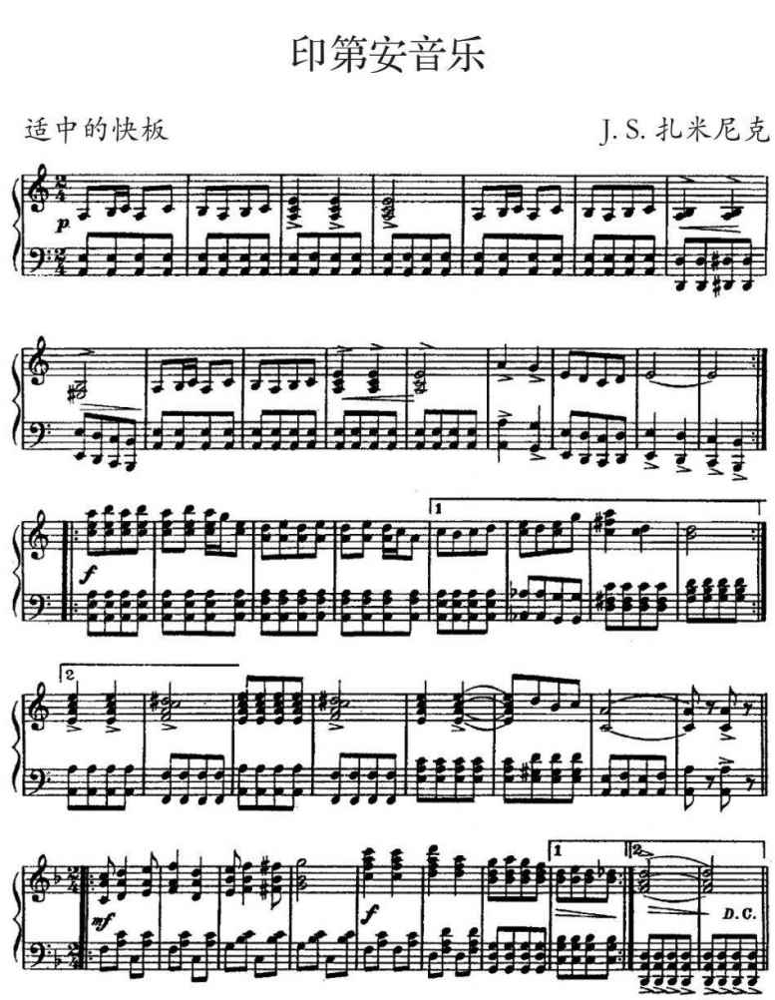
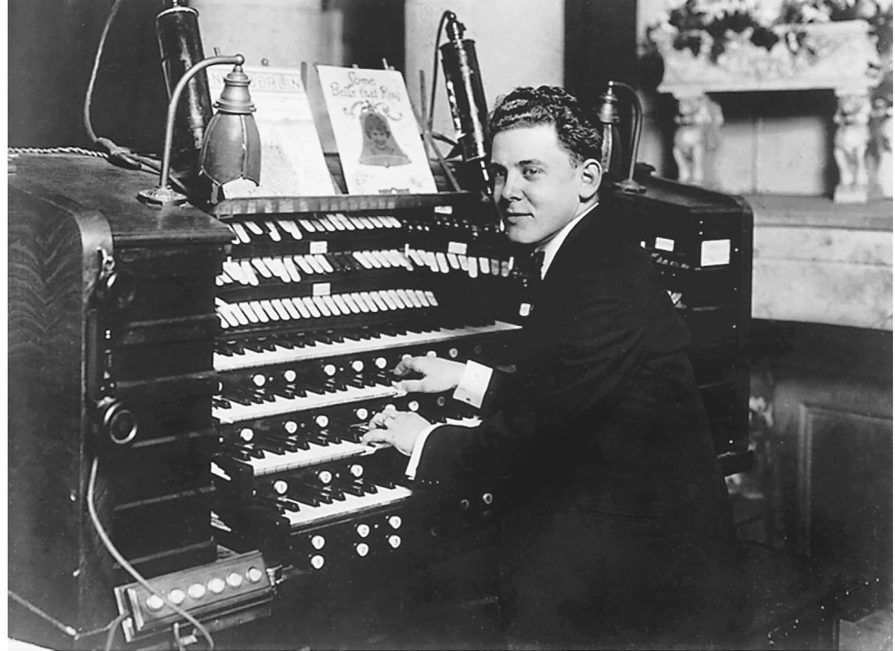
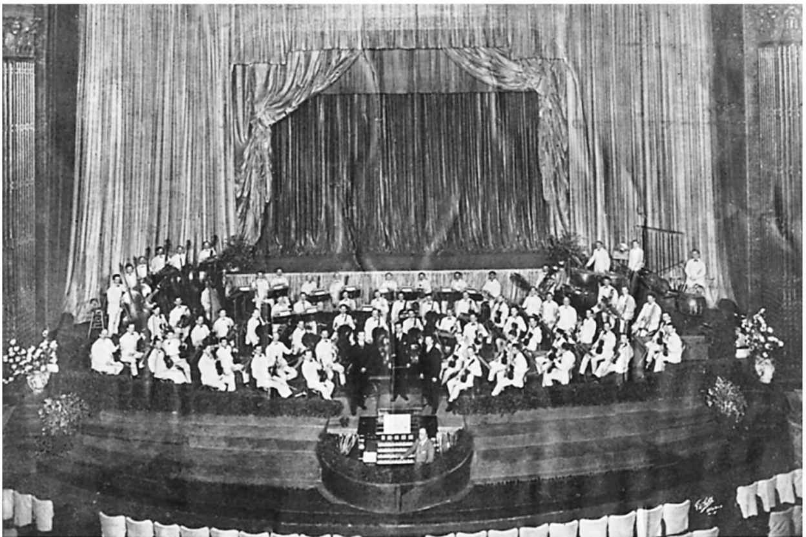

电影音乐的历史就像电影的历史一样，是一个讲不完的故事，并且会永远如此。很多早期的记录已经遗失，有不少是过于概括和误传的历史记录；我们所了解的电影音乐史主要聚焦于美国和西欧。至少有一点是清楚的：音乐在电影发展的最初阶段就已经出现，并随着电影在全球的发展而发展。
音乐和电影的起源
“我有一个想法，设计一种像留声机记录音乐一样记录影像的机器，这是有可能的。”托马斯·爱迪生写道，这是他的名言。不过，正是他对想象的描述，强调了在他的事业中音乐是第一位的。“因此，人们如果想要聆听或观看音乐会或者歌剧，只需要坐在家里的屏幕前，就可以欣赏表演……正是与歌手声音、管弦乐队演奏同步的音乐。”尽管爱迪生没有实现他那富有远见的家庭影院设计概念，音乐却证明了它在电影发展史上的重要地位。
1984年左右，威廉·迪克逊，爱迪生电影团队的负责人，在爱迪生实验室做了一次电影实验，首次实现了声画同步。两位男雇员随着罗伯特·普朗凯特1877>年的轻歌剧《诺曼底的钟声》中的乐曲翩翩起舞，乐曲是由迪克逊自己用小提琴演奏的，画面中可以看见留声机的喇叭。这是爱迪生实验室现在流传下来的声画同步的唯一样本。迪克逊的演奏常常被视为音乐伴奏的首例，但这并没有完全体现出音乐的驱动力。从某种意义上说，是画面在为音乐“伴奏”。当迪克逊的电影很可能向着爱迪生家庭影院的梦想迈进了一大步之时，它的音乐也很有可能朝另外一个方向发展，即流行音乐在早期电影配乐中的中心地位。迪克逊演奏的《船舱侍者之歌》可能来源于“高雅”音乐，但它被作为一首流行歌曲重新包装，并且在迪克逊演奏的时候被推向大众消费市场，是早期跨界音乐的范例。
然而，在那个时候，爱迪生已经转而研究更具商业价值的活动电影放映机。1984年首度公开亮相的西洋镜设备，为单个观影者播放无声影片。尽管声画同步发展停滞，但音乐伴奏的发展却没有。1895年开始，有声活动电影机，一种改良的活动电影放映机，配备有留声机和耳管，展示先前已有的爱迪生电影，主要是各种音乐表演，由爱迪生目录中精选的唱片伴奏。这些展示不是声画同步的；音乐只是选来与画面大致匹配。一些实例（虽然数量有限）显示，流行舞曲与进行曲被用在这些配对中：
《卡门西塔》中的《鸽子》，《露西·默里》和《梅·卢卡斯》中的一支爱尔兰吉格舞曲，《蛇形蝴蝶》中的《塔巴斯哥》。然而，有声活动电影机很快过气。爱迪生听说欧洲开始出现大银幕电影放映机，有声活动电影机很快就被投影放映机所取代。为了对抗外国竞争，爱迪生采用了大银幕投影系统。声画同步被爱迪生置于次要地位。从1912年到1914年，爱迪生只出品了几部声画同步的影片，其中一些还是音乐演奏会的录像。然而企业在经济上的失败使得他放弃了这一项目。
音乐对电影在欧洲的诞生也是至关重要的。法国与德国的第一批影片就是投影在大银幕上，放映给一群观众看的，要么已经有音乐伴奏，要么很快就有音乐伴奏。然而，与爱迪生的西洋镜不同，这些影片放映时，是现场音乐伴奏。在1892年的巴黎，埃米尔·雷诺放映了一系列动画投影《明亮的哑剧》，加斯顿·保兰临时为其配乐。1895年11月，卢米埃尔兄弟成功地将他们的电影放映机介绍给公众，首映时是否有配乐的记录并不清楚。即使没有，随后也很快由埃米尔·马拉瓦尔为卢米埃尔影片进行现场钢琴伴奏。1895年12月，马克斯·斯科拉达诺夫斯基在柏林抢占了卢米埃尔兄弟几乎两个月的先机。对杂技演员、舞者、拳击手以及动物表演的电影展示，斯科拉达诺夫斯基采用原创音乐和现场演奏现成音乐相结合的方式，演奏迷人的波尔卡舞曲、加洛普舞曲、圆舞曲和进行曲的混合曲调。例如，米哈伊尔·格林卡的交响诗《卡玛林斯卡亚》应该用于给俄罗斯舞者伴奏。1896年电影放映机在伦敦首次放映的时候，据赞助人以各种方式回忆，有一架钢琴和一架簧风琴。剧院管弦乐队为维多利亚女王进行了御前演奏。
在电影横扫欧洲并走向世界的过程中，音乐用录制和现场演奏的方式如影随形。爱迪生公司在它的有声活动电影机中推荐了供使用的具体的留声机唱片，然而，当爱迪生和卢米埃尔兄弟把影片出口到国外时，没有证据表明他们给出了现场音乐伴奏方法的指令。音乐最终还是融入了影片，即便没有立刻融入，在全球大部分地区，在电影传入的几天、几周或几个月之后也做到了。以某种方式，电影对于音乐仿佛具有地心引力，不论在世界的哪个角落。
早些时候，留声机是音乐伴奏的主要形式。这一技术对于观众来说，听着留声机，就像看到活动的画面一样新鲜而有吸引力。爱迪生的活动电影放映机于1984年出现在伦敦，很快就有富于事业心的人给他们提供为电影伴奏的留声机。1896年之前，奥斯卡·迈斯特就已经在柏林用留声机为电影配乐；爱迪生的有声活动电影机传入俄罗斯的下诺夫哥罗德；捷克也首次出现留声机为影片伴奏的情况。在布拉格，人们为留声机配备大型喇叭，所以整个礼堂都可以听见。在短短几年内，欧洲很多地方都开始使用留声机唱片。1984年之前，布鲁塞尔的一家电影院专门用留声机的音响播放歌剧表演短片。直至1929年，路易斯·布努埃尔和萨尔瓦多·达利的先锋电影《一条安达鲁狗》才在巴黎播出，由收录探戈舞曲和瓦格纳歌剧选段的留声机唱片伴奏。在波兰、澳大利亚和墨西哥都有留声机伴奏的记录。在伊朗，留声机伴奏更是源远流长，历经整个1910年代。
在美国，1905年左右，城市居民区出现一些改装的店铺，专门用来放映电影，被称为五分钱影院，随着这种影院的发展，留声机唱片在电影展会上的作用日益重要。五分钱影院播放各种影片、各种表演、有图文的歌曲（配有插图和歌词的幻灯片，这样观众可以一起哼唱），以及包括留声机唱片等各种配乐形式的音乐表演。通常，留声机被放在店外，既可以大肆宣传，吸引路人，又可以为店内的表演伴奏。
虽然使用留声机唱片是无声电影的一个重要特征，现场音乐伴奏却是更普遍的形式。在五分钱影院出现之前，在美国，现场伴奏是电影的典型特征，适用于各种场合放映的影片，例如杂耍场上。音乐家们在乐池中为影片演奏，就像他们为节目中的表演者现场演奏一样。1896年，爱迪生的投影放映机在纽约的首次公演就是在这样的场合——科斯特尔和比亚尔的音乐厅。在1904年之前，欧洲专门播放电影的剧院提供现场音乐伴奏——在丹麦，是一位钢琴演奏者；在斯德哥尔摩，是一个小型乐团。在全球很多地方，为电影现场演奏配乐的方式都实现了，例如印度、伊朗、日本、中国、澳大利亚、新西兰、墨西哥以及巴西。
世界各地的音乐伴奏
电影发展史的前十年中，音乐对其在全球的传播起了举足轻重的作用。然而，不同国家有不同的电影传统，音乐伴奏方式也不尽相同。在美国和西欧，流行音乐和艺术音乐并重。在很多国家，本土音乐很有吸引力，传统的和流行的都有。例如，在俄罗斯，很多伴奏者用俄罗斯本土音乐，并且在演奏的时候常常不注意看银幕。俄罗斯观众似乎并不感到惊讶。音乐伴奏是文化传播的有力媒介，而且随着无声电影时代的发展越来越重要。
在印度，卢米埃尔兄弟的电影放映机于1896年7月在孟买放映。似乎早期放映的都是无声电影。考虑到印度剧院有演出本土歌舞的重要传统，现场音乐伴奏很快进入印度影院，这一点不足为奇。到1896年8月，《印度时报》报道，合适的音乐为表演伴奏。伴奏者常常也担任演讲者的角色，有时这一角色是由歌手承担的，用歌曲的形式讲述故事。习惯上，英语影片会由西方乐器演奏的西方流行歌曲伴奏，而当地出品的印度电影则由传统的拉格以及用印度传统乐器，例如塔布拉鼓（一种小鼓）、萨伦吉琴（一种有乐弓的鲁特琴）、簧风琴演奏的带有嗡鸣结尾的改编民歌伴奏。但有实例说明，有时这两种传统也有交集：小提琴和单簧管会在印度影片中伴随印度乐器出现，萨伦吉琴也会伴随西方乐器出现在英语影片中。
伊朗的第一批电影可能是伊朗国王于1900年游历欧洲时自制的影片。很快，电影便成为皇室和上流社会消遣的活动。1904年第一家公共影院在德黑兰开业时，播放的影片几乎全是外国片，从西方进口的，人们听到的是常常用钢琴和小提琴等西方乐器现场演奏的西方音乐和讲译者的声音。在电影放映时也可以听到留声机播放的西方音乐，这提醒我们，在世界上很多地方，录制和现场演奏的音乐是同样可用的选择。德黑兰的第一家影院很快关门了，但有其他影院相继开门。在伊朗，随着电影业的发展，一些吸引下层社会观众的影院开张，但在这样的影院中，影片放映之时以及放映前后播放的都是波斯音乐。
在日本，活动电影放映机、老式放映机和电影放映机在1897年之前就已经出现。早期，电影院老板让乐队在电影放映地附近的驳船上演奏，既可以为电影做宣传，又可以为其提供背景音乐。很快，就由坐在观众后面的小型管弦乐队为电影伴奏。日本很多早期生产的影片主题都围绕音乐。1899年，东京的综艺表演剧院的宣传海报上有关于艺伎的影片，如果没有乐队的音乐家们为影片伴奏，那简直很难想象。1908年之前，有些剧院雇用整个管弦乐队和歌手为电影现场伴奏和伴唱。
同印度一样，在日本，外国影片的音乐伴奏所采用的西方乐器和曲调往往来自歌剧。日本本土生产的影片配乐却采用日本传统音乐和乐器，例如三味线（一种三弦琴）和太鼓。（正如荻原淳子指出，洛杉矶小东京的影院延续了采用日本传统音乐和乐器为日本影片伴奏的传统。）然而，实践证明，音乐伴奏有时是两种形式的混搭，在外国和本土影片的伴奏中，日本传统音乐和西方音乐元素都有所体现。
在中国，音乐对电影同样重要。在上海，第一批电影放映于1896年。爱迪生的老式放映机于1897年5月首次放映；同年7月之前，当地报纸报道了钢琴现场伴奏的情况。北京第一部本地影片《定军山》（1905）和香港第一部本地影片《偷烤鸭》（1909），都选自著名的中国戏剧。《定军山》本应在摄制时现场配上音乐，但似乎在电影放映时，当地音乐家们用本土乐器重新演绎了那些京剧选段。
日本“辩士”和讲解者的角色
传统的讲解者和音乐伴奏一样，在日本影院中都是整体的一部分。所谓“辩士”，就是为观众解释说明影片画面的讲解者。他们和电影院在日本出现的时间大体一致，都是1896年。很多“辩士”已经是歌舞伎剧场的明星或因为电影的工作而成名，他们中的很多人在电影观众中都有忠实的追随者。“辩士”的权利如此之大，以至于为电影伴奏的音乐家们必须配合“辩士”，使音乐无法与“辩士”的声音抗衡。在很多国家（包括美国）的电影史上，讲解者（或称译者）是重要角色。他们和伴奏互动，有时取代伴奏。在巴西和印度，讲解者就具有双重作用，他们唱出解说词。
巴西早期的本土电影都失传了，但从它们的片名，例如《巴伊亚舞蹈》（1899）和《卡波耶拉舞蹈》（1905），就可以看出，它们出自巴伊亚的一个巴西黑人团体，音乐也出自那里。而且难以想象的是，这些舞蹈电影没有尝试重新创作桑巴等巴西黑人音乐。巴西无声电影时代的电影制作人充分挖掘了巴西流行音乐和音乐表演者，有时会在幕后安排歌手为影片现场演唱。
在各种音乐伴奏如此发展的情况下，值得注意的是，有些影片是无声放映。爱迪生的活动电影放映机放映的影片就没有音乐伴奏，甚至老式放映机投影的影片有时也没有音乐伴奏。里克·奥特曼已经指出，爱迪生的投影放映机在科斯特尔和比亚尔的音乐厅首映时，就没有采用报纸上报道的音乐为影片伴奏，而仅仅是介绍了它们。在俄罗斯，任何形式的音乐伴奏都要过十几年才被采用，而且，一些影片甚至到1910年代仍然是无声放映。奥特曼的研究显示，即便是在美国，无声放映也并不罕见。
在电影史上的头十年，音乐和画面之间的关系很复杂。有些影片是无声放映，但大部分影片是有某种音乐伴奏的。有些音乐依靠留声机唱片，但大部分是现场伴奏的。现场伴奏可以由一位音乐家完成，通常是一位钢琴家，也可以是一个小型乐队或者一个管弦乐团。有些音乐伴奏是断断续续的，有些是连续不断的。有些伴奏是即兴演奏的，演奏的内容可能会也可能不会和银幕上的内容相关。即使在电影发展的早期，有些伴奏是为某部影片原创的，但大部分是利用现成的音乐。本土音乐，无论是传统的还是当代的，在全球范围内都是主力。音乐伴奏的多样性说明早期的电影配乐绝不是单一的。
音乐和一种艺术形式的诞生
大约从1906年开始，一直到1910年代，电影商业的主要特点是努力从羽翼未丰的产业稳步提升为有利可图的产业，并且确立自身作为一种艺术形式的正统性。这些努力包括大力发展基于叙事的媒介（例如美国经典的叙事传统），以及扩充电影长度（最终达到60到120分钟的正片长度）；发展并规范电影技术，为基于叙事的媒介开发一些技巧；提升电影内容质量（例如，法国的艺术电影公司或日本歌舞伎团的影片摄制对文学和戏剧经典作品的改编）；促使观影场所的高档化，逐步发展成1910年代和1910年代有精致画面的华丽宫殿；吸引更多的观众。音乐伴奏在这一转变过程中起到至关重要的作用。正是在这一时期，人们开始尝试为影片提供合适的、连续的现场伴奏，并关注伴奏的质量。不久，音乐伴奏的质量成了电影院老板们吆喝的资本。
一些机构和活动推进了这一转变。商业性出版物会提及音乐、宣传技巧、设置标准，并且提倡现场连续性的音乐伴奏。法国高蒙公司早在1984年就为电影院老板发行周刊《音乐手册》；在美国，《爱迪生摄影》杂志于1909年开始刊发文章《爱迪生电影配乐》。其他录音公司、商业杂志以及企业家们，也开始为适合的音乐类型献计献策。1910年代逐步形成的配乐说明单（正如人们所知道的）是用来协助伴奏者创作流畅适配音乐的乐曲单。在美国，从各种渠道精选出来的乐曲，包括音乐会上的标准曲目，特别是19世纪的艺术音乐、流行和乡村乐曲，以及原创曲目，都被用作对影片中不同情境的伴奏。后来，总谱制作的配乐说明单在乐队资源相对贫乏的地方流传，这提示我们，在整个无声电影时代，同一部影片在不同的场所会配不同的乐曲。
随着电影在全球的流传，配乐说明单也在不断传播。中国的伴奏者在为国外引进的影片配乐时很显然参考了配乐说明单。随着配乐说明单的不断发展，其内容越来越详尽，包括音乐选段的摘录、时间安排以及为声画配合所做的详细指导。配乐说明单的编写参考了各种音乐百科全书，这些百科全书也几乎是在同一时间出版发行的。
音乐百科全书包括音乐的详细目录，有些是影院中原创的，另一些是现有的，通过它们的叙事用途来编目分类。它们当中最有影响力的是：朱塞皮·贝切的《电影音乐库》系列（1919—1929），出版于柏林；J.S.扎米尼克的《山姆·福克斯电影音乐》系列（1913—1914）；厄尔诺·拉倍的《钢琴家和风琴师的电影气氛》（1924）和《电影音乐百科全书》（1925），出版于美国。这些百科全书广泛收录了伴奏者可能面对的各种叙事情境，并相应推荐了合适的音乐。例如，扎米尼克的“印第安音乐”为美国印第安人出镜提供了多用途的乐曲。
扎米尼克的“快节奏音乐”专门适用于搏斗、决斗、暴乱或失火的场景。甚至背叛行为都被改为恶棍、流氓、走私犯或者反叛者的专属。拉倍的《电影音乐百科全书》有几十个编目，涵盖从战争到婚礼的音乐（以及其间的几乎每一种音乐）。任何种类的音乐百科全书在世界范围内都在使用。在日本，伴奏者都会拿到气氛音乐的目录单；在俄罗斯，阿纳托利·戈尔多宾和鲍里斯·阿赞切耶夫出版了《在钢琴上为电影伴奏》（1912。无声电影时代的大多数音乐已失传或者从未被记载，因此，我们现在已知的很多无声电影配乐的形式和特点都来自尚存的围绕早期电影音乐的论述：配乐说明单、百科全书、商业杂志的建议专栏、报纸乐评文章、操作手册以及口述历史。这些资料让我们重构了音乐在无声电影时代的功能。可惜的是，这些资源非常有限，有待继续发掘。因此，对于无声电影时代音乐的功能，我们只有一个远非完整的印象。

图1 J. S. 扎米尼克的《电影音乐》第一册（1913）是无声电影时代一系列颇具影响力的音乐百科全书之一。“印第安音乐”是这些百科全书中通用方法的典型代表，而低音谱号下的“手鼓”节奏是根据美国土著音乐表演的固定形式创作的
从现有的资料可以看出，到1910年代，美国和西欧电影音乐已经具备以下几种功能：可显示地理位置和年代，加强气氛，描绘情感，解释画面，充实人物形象。通过运用音乐惯例（有人可能会说这是陈词滥调），伴奏者可以实现如下效果，例如，用颤音制造悬念、用拨奏表现偷偷摸摸的行为、用不和谐音呈现恶行。事实上，在无声电影的音乐伴奏中，气氛音乐变得如此重要，以至于在电影录制过程中常播放气氛音乐来激励演员。
随着音乐伴奏试图结合实现这些功能，流行音乐的运用却开始与之抗衡。在无声电影的播放中，流行音乐作用非凡。然而，美国和西欧的音乐伴奏相关出版物起初却抵制流行音乐，并且谴责根据歌名的适合性选择流行歌曲的做法。考虑一下当时最有影响力的一个音乐总监在试图将流行音乐清除出纽约电影院时经历了多大的麻烦吧。厄尔诺·拉倍，卓越的电影音乐作曲家和指挥家，还是两部重要的电影音乐百科全书的作者，经常抱怨观众对流行音乐的偏好。他发起了一场个人运动，试图把艺术音乐引进电影配乐中，却没有能够彻底成功。好莱坞出现了不祥之兆，到1910年代，很多电影公司开始推销专门为影片谱写的歌曲，甚至收购音乐出版公司，把歌曲投放市场。
对于不同种族对电影接受程度的研究同样体现了流行音乐的主流地位以及它可能造成的问题。玛丽·卡宾的研究显示，在芝加哥美国黑人社群，胖子沃勒和路易斯·阿姆斯特朗有一次在剧院乐团为受众是白人观众的影片中的黑人观众镜头演奏了蓝调和爵士乐。阿姆斯特朗注意到，当演奏进入高潮时，音乐家是如何不顾银幕上的内容，这激起了一些观众的抱怨，他们发现如此没有理由的演奏让人分心。这个时期的流行音乐——它的各种形式和相关论述——提醒我们，音乐伴奏可以起到超乎寻常的作用，从而成为文化斗争的潜在场所。
去思考在其他领域还有多少这种超乎寻常的潜能被挖掘出来，这是一件有趣的事。正如我们所见，在很多国家影院蓬勃发展的地方，当地流行音乐被用来为本地电影配乐。在此，音乐成为表达民族认同的一种手段。在印度、伊朗和日本，也许还有很多其他地方，本土音乐也被用来为国外引进的影片配乐。这让我想起了日本早期的电影企业家高松丰治郎，他曾为了拍摄电影周游日本。他曾为外国影片提供误译旁白，无论电影原来是何内容，都被他改成了为自己宣传政治的工具。在外国影片播放的同时听见本土音乐，会发生什么？这一点我们需要做更多的研究。这种音乐在何种程度上改编甚至批判了电影的内容？音乐可以促进人们对电影的接受，同时可以挑战科技、价值观念，以及它使用的叙事手法。作为无声电影影展（其实是反抗力的潜在场所）中文化界面的一点，音乐的能量是一整个有待开发的领域。
流行音乐出现之后，专门为某部影片量身定做的电影配乐悄然兴起。虽然最早始于1890年代，这一现象却可以追溯到法国艺术电影公司，该公司起用著名的艺术音乐作曲家，令电影配乐声名鹊起。卡米尔·圣—桑为电影《吉斯公爵的被刺》（1908）所作的配乐就是保存下来最好的一例。同时，在俄罗斯，米哈伊尔·伊波利托夫——伊凡诺夫为影片《斯金卡·拉辛》（1908）谱曲；稍晚些时候，意大利的彼得罗·马斯卡尼为影片《撒旦的狂想曲》（1915）谱曲。影片在国外放映时，大部分配乐被替换了。
美国原创配乐的出现可追溯至1910年。马丁·马克斯一个人就发现了1911-1913年期间的一百多首配乐，很多都是卡莱姆公司的。他关于约瑟夫·卡尔·布赖尔和D. W.> 格里菲斯为影片《一个国家的诞生》（1915）所作配乐的研究极富启发性，是那个时期首批电影音乐学术研究之一。影片《卡比利亚》（1914）是早期无声电影时代原创配乐的代表，这部意大利影片场面壮观，时长两个多小时，被复刻在DVD上，还能听到曼利奥·马扎所作配乐的钢琴缩编谱。
我所说的“原创”是指专门为某部影片量身定做的乐曲。虽然对于电影来说是原创，但这些乐曲未必是如我们想象的那般原创，通常是各种乐曲的汇编，有时还包括新创作的乐曲。布赖尔和格里菲斯为影片《一个国家的诞生》所作的配乐轰动一时，尽管对影片来说是原创的，但该配乐是一个汇编，有理查德·瓦格纳的《飞翔的女武神》和爱德华·格里格的《在山魔王的宫殿里》之类的交响乐作品，以及各种爱国曲调、流行歌曲、吟游音乐和一些新作的乐曲，其中尤为显著的是可能由格里菲斯本人执笔的一段爱情主旋律。
从一开始理查德·瓦格纳就对电影伴奏者们影响深远。他的“整体艺术观”（总体艺术作品）理论为音乐服从戏剧提供了可资借鉴的方式，他使用“主导动机”的手法，将配乐和叙事有机结合成一个整体，这成为一个范例。早在1910年，爱迪生公司的影片《弗兰肯斯坦》的配乐说明单就使用了卡尔·马利亚·冯·韦伯的歌剧《自由射手》中的主旋律，作为怪物的主导动机。俄罗斯的报纸曾报道，胡佳科夫为影片《可怕的复仇》（1913）创作的“旋律主题”“非常适合其中的角色”。美国《电影新闻报》1910年报道，使用主导动机手法是“在任何情况下必须遵守的自然法则”。当然，并非所有人都推崇瓦格纳的理论。例如，马扎在《卡比利亚》的配乐中就没有使用主导动机手法。

图2 旧金山的蒂沃丽花园歌剧院中，阿贝尔伯爵坐在斯宾塞管风琴的键盘前。在无声电影时代，精致的剧院管风琴可以演奏出洪亮的乐曲，声效丰富多样
到1910年代，受到美国和欧洲观众青睐的配乐往往是预先计划，大部分非即兴、连贯的，并且同电影画面在一定程度上相呼应，演奏水准比较专业。钢琴可能是那一时期的主力乐器，但剧院管风琴才是明星。
巨大的沃立舍管风琴就是为电影配乐特制的，在美国被誉为黄金标准，有很多戏剧音栓，可以实现不同音效。作为它的竞争者之一，莫顿管风琴拥有各种音效：电话铃声、敲门声、教堂和雪橇的铃声、汽船声、火车声、警笛声、鸟鸣声、汽车喇叭声、火警锣声、波涛声、风声、雷声、马蹄声、飞机轰鸣声、响板声以及中国锣声。在大城市，电影院管弦乐队在专门为电影建造的宏伟壮丽的剧院中演奏配乐。纽约的洛克西剧院以拥有一百多名乐手的管弦乐团而闻名。有些指挥甚至比电影导演享有更高的知名度。

图3 美国国会大厦是纽约最好的影剧院之一，有一流的管弦乐团伴奏。图中是大卫·门多萨为国会大厦的大管弦乐团担任指挥
无声电影配乐发展的顶点
1920年代是电影配乐发展的鼎盛时期。在无声电影时代的末期，很多电影都有专门为之创作的配乐，包括汉斯· 埃德曼所作配乐的《诺斯费拉图》（1922），戈特弗里德·胡佩茨所作配乐的《大都会》（1927），亚瑟·霍尼格所作配乐的《铁路的白蔷薇》（1923），路易斯 · F. 戈特沙尔克所作配乐的《凋谢的花朵》（1919），以及莫蒂默 · 威尔逊所作配乐的《巴格达窃贼》（1924）。很多电影配乐中有前沿性的曲调，例如艾德蒙 · 迈泽尔为影片《战舰波将金号》（1925）创作的无调配乐（这部影片在柏林首映时引起骚乱，后被禁止）、乔治 ·安太尔为影片《机械芭蕾》（1924）创作的不和谐配乐，以及埃里克· 萨蒂为影片《幕间节目》（1924）创作的反传统配乐。影片《阿拉巴尔的女孩》（1922）在阿根廷上映时的配乐是探戈调，由该电影导演何塞 · 费雷拉填词。伊朗的易卜拉欣 ·莫拉蒂为自己的无声影片《博尔哈瓦》（1933）创作了配乐，并且在电影放映和播放配乐时，试图实现声画同步。
萨蒂为《幕间节目》创作的配乐是那个时代最具吸引力的作品之一。片长二十分钟左右，由雷内· 克莱尔导演的《幕间节目》原本是在两场芭蕾表演之间播放，表现的是混乱的一夜。这部影片是对理性和逻辑的达达主义式攻击，是摆脱叙事负累、受梦想启示的纯粹电影。就像克莱尔挑战（或者试图挑战）叙事电影的发展传统一样，萨蒂不遵守音乐伴奏的各种清规戒律：
拒绝声画同步，抵制主导动机手法或其他任何的统一结构，故意混淆节奏，甚至与调性对抗。例如，配乐虽然看上去属于调性和声，但开头部分似乎从不相干的A大调到F大调再到C大调，故意省略几个显著的主音和弦使得调性无法确立。事实上，有这么多尚未解决的不和谐音，以至于不论我们听到什么样的和弦，它们都被去除了实现稳定和声体系的功能。然而，在配乐中有一例连续的主音和弦。影片中有一处非常滑稽的花招，银幕上出现了一个法文单词，意思是“剧终”。但是事实上电影并未结束，于是在大三和弦（配乐中唯一的结束时刻）的伴奏中，一名演奏者示意大家不要走开。
近年来，无声电影有复苏的迹象。1970年代，PBS电视台开始播出威廉·>佩里所作配乐的无声影片，在美国由学者、指挥家吉莲·安德森现场演奏，在英国则由卡尔 ·戴维斯现场演奏。1980年代，卡迈恩· 科波拉为影片《拿破仑》（1929）创作的配乐声名鹊起，今天的观众们有幸看到无声电影的复兴，感受到1920年代的电影包罗万象的特点。很多配乐已经失传，例如达律斯 ·米约为影片《非人性》（1924）创作的传奇配乐；然而，也有一些失而复得。1975年，德米特里·肖斯塔科维奇为影片《新巴比伦》（1929）创作的配乐在失传很久之后被发现，1980年代初在欧洲和美国播放这部影片时现场演奏了配乐。越来越多的无声电影重新回到人们的视线，与此同时，电影音乐作为重要的一环也失而复得。有些影片的原创配乐得以重见天日：《凋谢的花朵》（1919）、《诺斯费拉图》（1922）、《大都会》（1975），以及《持摄影机的人》（1929），合金乐队根据吉加·维尔托夫的音乐构想为该片录制了配乐。令人惋惜的是，《凋谢的花朵》和《持摄影机的人》的电影原声配乐DVD都已失传。有些影片被重新创作了配乐：卡尔·戴维斯为影片《风》（1928）创作了配乐，合金乐队为影片《罢工》（1925）（1925）创作了配乐，马蹄乐队为影片《福尔摩斯二世》（1924）创作了配乐，爵士乐长号手威克里夫·戈登为影片《灵与肉》（1925）创作了配乐，迈克尔·尼曼为影片《持摄影机的人》创作了配乐，约瑟夫·图灵为影片《凋谢的花朵》创作了配乐，罗伯特·伊斯雷尔为影片《铁路的白蔷薇》（1923）创作了配乐。甚至在这些配乐中，有些已经失传。
日本超现实主义影片《疯狂的一页》（1927）在1975年（首映之后将近五十年）重回银幕时，由该片导演衣笠贞之助创作的配乐充满了迷人的好奇色彩。吉奥吉·莫罗德在影片《大都会》于1985年重返银幕的时候运用了迪斯科乐曲，引起了不小的轰动。
2004年，影片《战舰波将金号》在伦敦特拉法加广场上映时，英国乐队“宠物店男孩”为其现场伴奏。2000年，特纳经典电影频道发起了一场“年轻作曲家竞赛”，有幸进入决赛的选手可以角逐为随后全国放映的未删节无声影片创作配乐的机会。然而，最令人兴奋的是，有现场音乐伴奏的无声影片在各种场合不断成功地上映，比如在电影节、电影资料馆、音乐厅，有时甚至在它们最初的发源地——电影院。